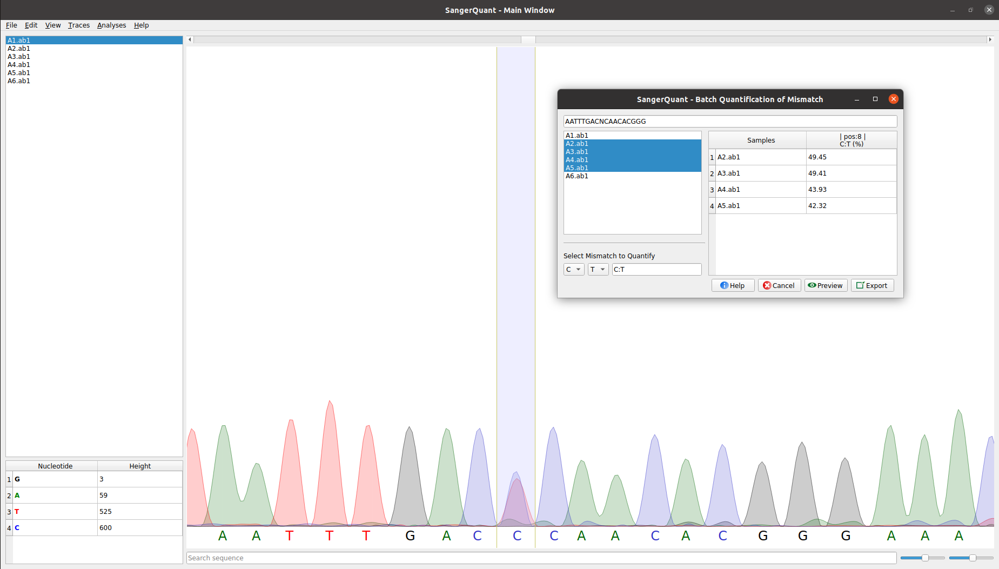

About
SangerQuant is a sanger trace viewer and analyzer specifically designed to perform batch quantification of mismatches at any position

SangerQuant is a sanger trace viewer and analyzer specifically designed to perform batch quantification of mismatches at any position
